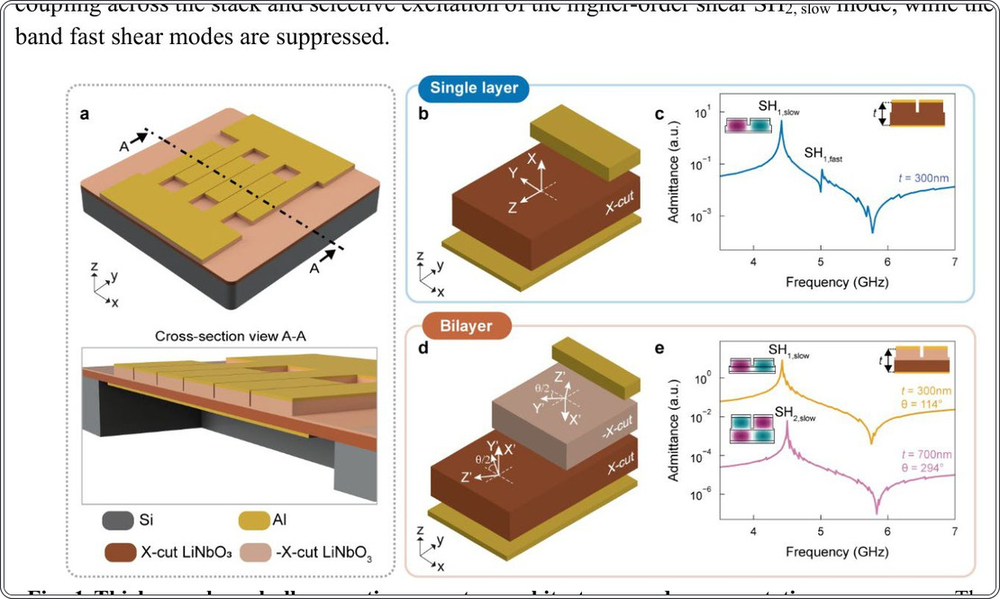
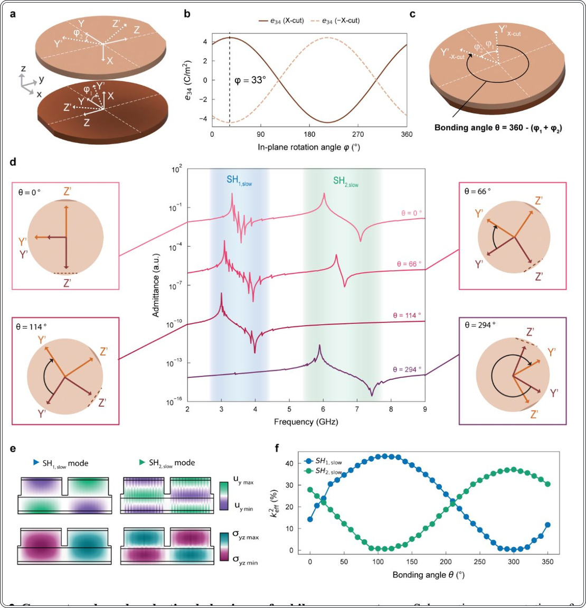
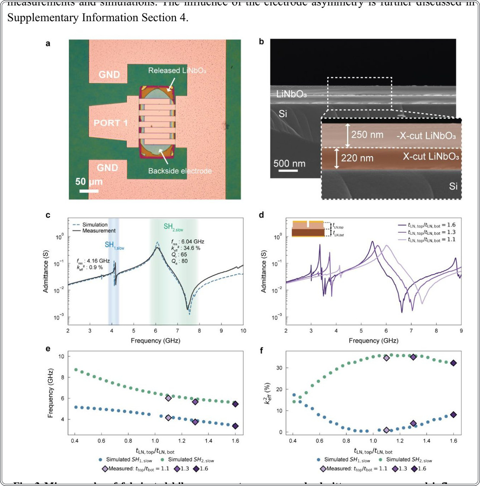
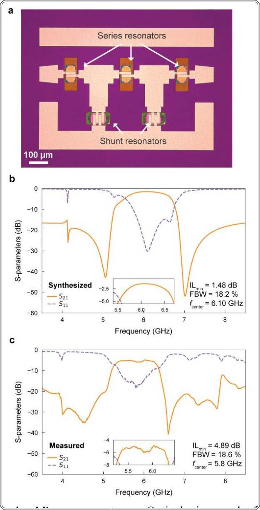
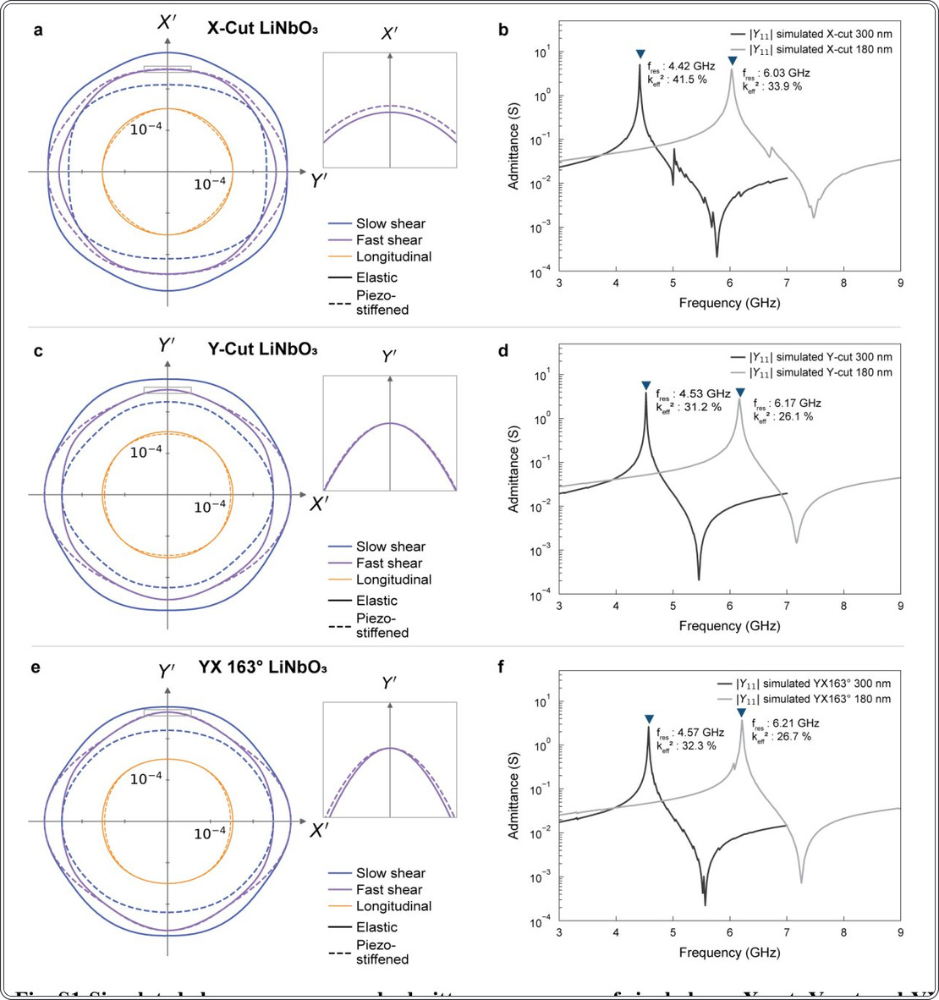
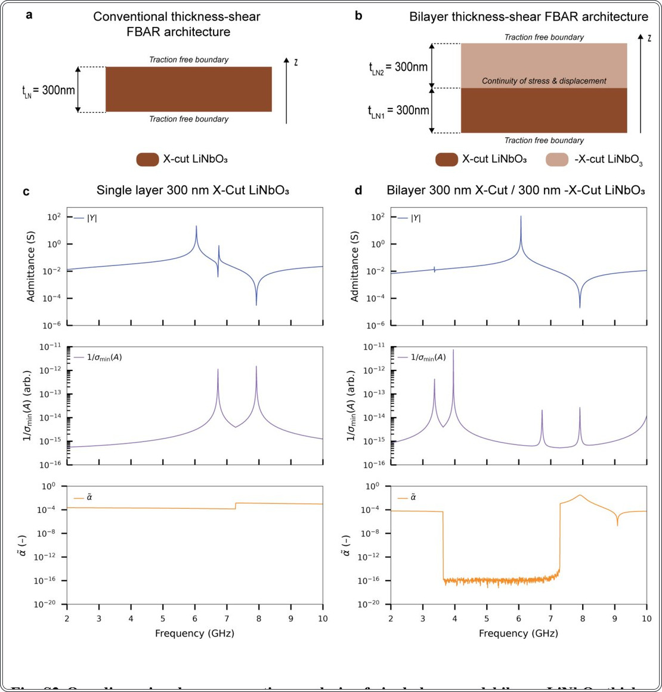
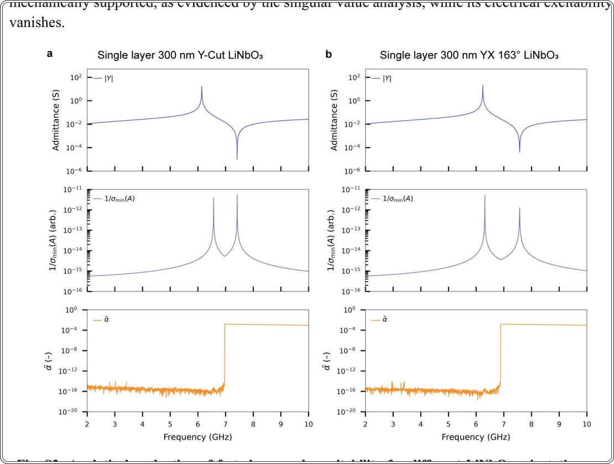
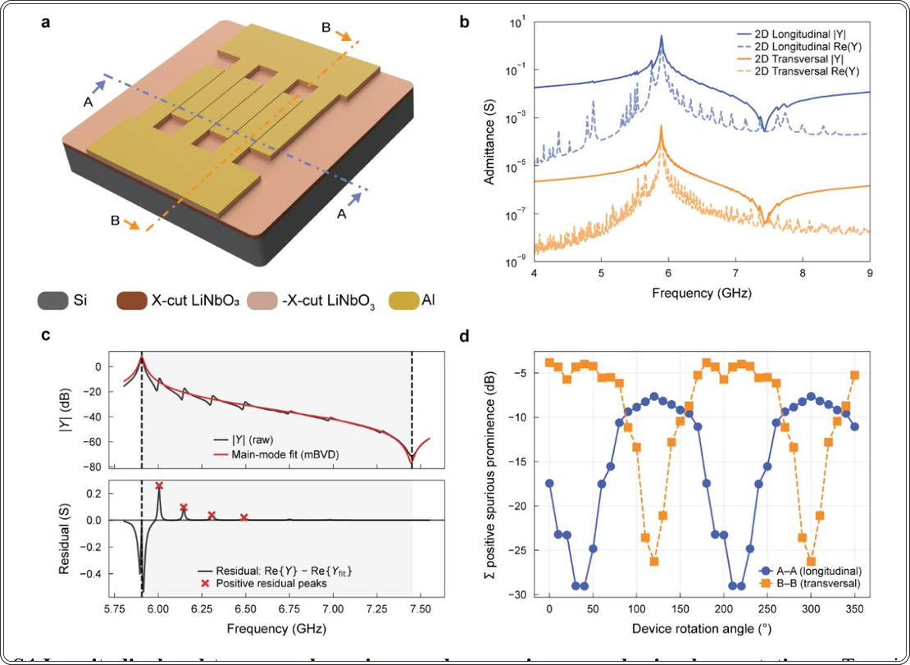
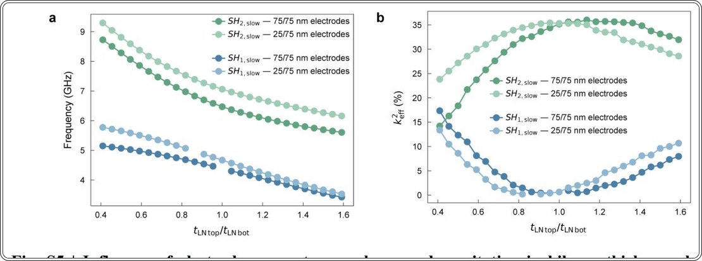
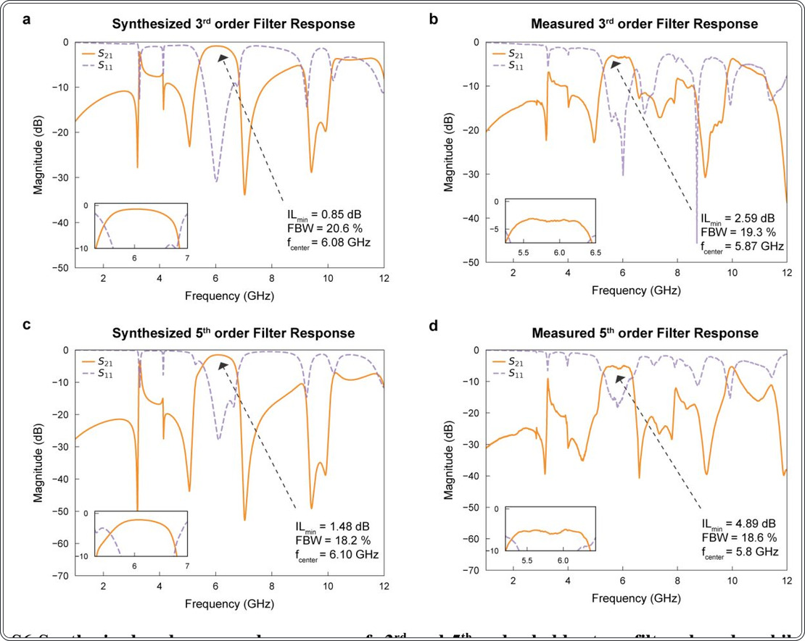

Екі қабатты литий ниобаты: 6 ГГц сүзгілеріндегі паразиттік модаларды жою


Суреттің толық сипаттамасы
1-сур. Қалыңдық-ығысу көлемдік акустикалық резонатор архитектуралары және өкілдік жауаптар. a Ұсынылған құрылғының үш өлшемді сызбасы, ол аспалы LiNbO3 мембранасында өрнектелген алюминий IDT-лерінен тұрады. A-A бойындағы қима аспалы құрылымды және қалыңдық-ығысу қоздыруын қамтамасыз ететін қалқымалы төменгі электродты көрсетеді. b Бір қабатты X-кесік LiNbO3 резонатор стегі. c X-кесік LiNbO3 қалыңдық-ығысу BAW резонаторының адмитанстық жауабы, SH1 баяу модасының күшті байланысы және онымен бірге жүретін SH1 жылдам модасының паразиттік режимі. d Оңтайландырылған қосылу бұрышы θ бар, байланысқан X-кесік және -X-кесік LiNbO3 қабаттарынан тұратын ұсынылған екі қабатты резонатор стегі. e Шамамен 4,5 ГГц жиілікте SH1 баяу және SH2 баяу модаларының селективті қоздырылуын, сондай-ақ жолақ ішіндегі жылдам ығысу модаларын басуды көрсететін өкілдік адмитанстық жауаптар. Бұл әртүрлі LiNbO3 қабат қалыңдығы мен қосылу бұрыштарын қолдану арқылы жүзеге асырылады.
5G және Wi-Fi 6E желілерінің дамуы 5 ГГц-тен жоғары жиілікте жұмыс істейтін кең жолақты сүзгілерді қажет етеді. Дәстүрлі резонаторлар литографиялық шектеулер мен паразиттік модалардың пайда болуына байланысты қиындықтарға тап болады. Екі қабатты X-кесілген литий ниобаты (LiNbO3) архитектурасы қабаттар симметриясын басқару арқылы бұл мәселені шешеді.
Басты ойлар
- Екі қабатты LiNbO3 құрылымы SH2-модасын таңдамалы қоздырады.
- 6 ГГц жиілігінде электромеханикалық байланыс k2eff 35%-ға жетеді.
- 294° біріктіру бұрышы паразиттік жылдам модаларды басады.
Толығырақ
Зерттеушілер арнайы таңдалған бұрышпен біріктірілген екі жұқа LiNbO3 пленкасынан тұратын конструкцияны ұсынды. Мұндай құрылымда қалыңдығы бойынша екінші ығысу модасы (SH2, slow) қоздырылады, ал қарапайым X-кесікке тән жылдам ығысу модалары тиімді басылады. Бұл қабаттардың кристаллографиялық осьтерін бұру арқылы пьезоэлектрлік коэффициенттердің таңбаларын өзгертіп, қажетті мода үшін конструктивті интерференцияны қамтамасыз ету арқылы жүзеге асады.
6 ГГц жиілігінде жұмыс істейтін тәжірибелік үлгілер 35% деңгейіндегі электромеханикалық байланыс коэффициентін (k2eff) көрсетті. Оңтайлы біріктіру бұрышы θ = 294° жолақ ішіндегі паразиттік тербелістерсіз таза спектрлік жауапқа қол жеткізуге мүмкіндік берді. Сатылы сүзгілердің прототиптері 18,6% салыстырмалы өткізу қабілетін көрсетті, бұл әдістің келесі буын радиожиілік сүзгілері үшін жоғары тиімділігін растайды.
Шектеулер
Зерттеу зертханалық прототиптермен шектелген; пленкаларды дәл біріктіру процесін жаппай өндіріске бейімдеу қажет.
Мақаланың толық талдауы
Түйіндеме
Сымсыз байланыс стандарттарының жоғары жиіліктер мен кең жолаққа қарай дамуы акустикалық сүзгі технологияларына жаңа талаптар қоюда. Дәстүрлі резонаторлар 5 ГГц-тен жоғары жиіліктерде литографиялық шектеулер, электромеханикалық байланыс коэффициентінің (k²eff) төмендеуі және қажетсіз паразиттік модтардың қозуы салдарынан практикалық қиындықтарға тап болады.
Түсіндірме
Электромеханикалық байланыс коэффициенті (k²eff) электр энергиясын акустикалық энергияға түрлендіру тиімділігін анықтайды; ол неғұрлым жоғары болса, сүзгінің өткізу жолағы соғұрлым кең болады.
Авторлар қалыңдығы бойынша ығысу модында жұмыс істейтін, X-кесілген литий ниобаты (LiNbO₃) негізіндегі екі қабатты көлемдік акустикалық резонатор архитектурасын ұсынады. Әдіс симметрияны инженерлік басқаруға негізделген: екі пьезоэлектрлік жұқа қабықшалы қабат тігінен белгілі бір байланыстыру бұрышымен орналастырылады. Бұл конфигурация екінші ретті қалыңдығы бойынша ығысу модын (SH₂, баяу мод) таңдамалы түрде қоздыруға мүмкіндік береді.
Маңызды
Симметрияны басқару арқылы жылдам ығысу модтарын басуға және өткізу жолағында паразиттік резонанстарсыз спектрлік тазалыққа қол жеткізуге болады.
Шамамен 6 ГГц жиілікте жұмыс істейтін эксперименталды үлгілер 35% шамасындағы k²eff коэффициентін көрсетті, бұл шекті элементтер әдісі (FEM) арқылы алынған модельдеу нәтижелерімен сәйкес келеді. Сатылы сүзгілердің (ladder filters) прототиптері 18,6% салыстырмалы өткізу жолағын көрсетті.
Абайлаңыз
Нәтижелер эксперименталды макеттер (proof-of-concept) негізінде алынған, бұл технологияны жаппай өндіріске енгізу үшін қосымша зерттеулерді қажет етеді.
Бұл архитектура қабаттардың қалыңдығын өзгерту арқылы жиілікті реттеуге мүмкіндік береді, сонымен бірге жоғары байланыс пен спектрлік тазалықты сақтайды, бұл оны келесі буын сымсыз байланыс жүйелері үшін перспективалы платформаға айналдырады.
Кіріспе
5G және одан жоғары желілердегі радиожиілікті сүзгілердің эволюциясы
Бесінші буын (5G) сымсыз желілері мен болашақ стандарттардың дамуы спектрдің жүктелуін азайту және деректерді тасымалдау жылдамдығын арттыру үшін жоғары жұмыс жиіліктері мен кең жолақтарға көшуді талап етеді. FR1 диапазонында (6 ГГц-тен төмен) n77 (3,3–4,2 ГГц), n78 (3,3–3,8 ГГц) және n79 (4,4–5 ГГц) сияқты негізгі жолақтар 4G LTE жүйелеріне қарағанда жоғары сыйымдылық пен өткізу қабілетін қамтамасыз етеді. Сонымен қатар, Wi-Fi 6E үшін 6 ГГц диапазонында 1200 МГц қосымша жолақтың бөлінуі РЖ (радиожиілік) фронтенд жүйелерінен кеңірек арналармен жұмыс істеуді талап етеді.
Маңызды
5G және Wi-Fi 6E-ге көшу кеңейтілген жиілік диапазондарында тиімді жұмыс істейтін және жоғары өткізу қабілетін сақтайтын сүзгілерді талап етеді.
Акустикалық сүзгі технологиялары РЖ жүйелерінің негізгі шектеуші факторы болып қалуда. Дәстүрлі беттік акустикалық толқынды (SAW) және көлемдік акустикалық толқынды (BAW) сүзгілер алдыңғы буындарда сәтті қолданылған, бірақ масштабтауда қиындықтарға тап болуда. SAW құрылғылары үшін жиіліктің артуы толқын ұзындығы мен электрод өлшемдерінің қысқаруын талап етеді, бұл литография мүмкіндіктерін шектейді. IHP-SAW (жоғары өнімді SAW) технологиясы энергияны локализациялауды, сапа коэффициенті мен электромеханикалық байланыс коэффициентін (k²eff) жақсарту арқылы бұл мәселені ішінара шешеді.
Түсіндірме
k²eff (электромеханикалық байланыс коэффициенті) — электр энергиясын акустикалық энергияға түрлендіру тиімділігін анықтайтын параметр; ол неғұрлым жоғары болса, сүзгінің өткізу жолағы соғұрлым кең болады.
SAW-дан айырмашылығы, BAW резонаторларының жиілігі пленка қалыңдығымен анықталады, бұл латеральды масштабтау шектеулерін жояды. Коммерциялық шешімдерде алюминий нитриді (AlN) және алюминий-скандий нитриді (AlScN) жетекші орында, мұнда AlScN k²eff-ті айтарлықтай арттырады. Эпитаксиалды AlN және периодты полярланған пьезоэлектрлік пленка (P3F) архитектуралары жоғары ретті модаларды қоздыруға және X және Ku диапазондарында жұмыс істеуге мүмкіндік береді. Дегенмен, кең салыстырмалы өткізу жолағы үшін өте жоғары жиіліктер мен жоғары k²eff-ке бір уақытта қол жеткізу күрделі инженерлік міндет болып қалуда.
LiNbO3 негізіндегі жоғары жиілікті резонаторлардың болашағы
Литий ниобатының (LiNbO3) жоғары электромеханикалық байланыс коэффициенті оны тиімді акустикалық сүзгілер үшін перспективалы материал етеді. LiNbO3 жұқа пленкаларын дыбыс жылдамдығы жоғары SiC сияқты субстраттарға интеграциялау сапа коэффициентін жақсарта отырып, 3 ГГц-тен жоғары жиілікте жұмыс істеуге мүмкіндік береді. Аспалы мембраналық құрылымдарды қолдану акустикалық энергияның локализациясын күшейтіп, k²eff > 30% тиімді байланыс коэффициентіне жетуге көмектеседі. Алайда, симметриялық, көлденең ығысу және көлемдік ығысу модтары үшін резонанс жиілігі латеральды өлшемдерге қатты тәуелді, бұл жиілікті масштабтауды шектейді.
Маңызды
LiNbO3 аспалы құрылымдары k²eff > 30%-дан жоғары көрсеткішті қамтамасыз етеді, бірақ жиіліктің латеральды тәуелділігі пленка қалыңдығына негізделген модтарға көшуді талап етеді.
Өлшемдердегі шектеулерді жеңу үшін Лэмбтің жоғары ретті модтары (мысалы, A1) немесе латеральды қоздырылатын көлемдік акустикалық резонаторлар (XBAR) қолданылады. Баламалы тәсіл — FBAR резонаторларындағыдай электр өрісін пленка қалыңдығы бойымен қолдану. X-кесік LiNbO3 ерекше қызығушылық тудырады, өйткені ол k²eff ≈ 40% болатын фундаментальды баяу ығысу модын (SH1, slow) қолдайды. Алайда, Wi-Fi 6E диапазоны (6–7 ГГц) үшін пленка қалыңдығын айтарлықтай азайту талап етіледі, бұл сапа коэффициенті мен қуатқа теріс әсер етеді. P3F (пьезоэлектрлік көп қабатты) архитектуралары пьезоэлектрик қалыңдығын сақтай отырып, қалыңдық бойымен жоғары ретті ығысу модтарын қоздыруға мүмкіндік береді.
Түсіндірме
P3F (Piezoelectric-on-Piezoelectric) — бұл қабаттар симметриясын инженерлік жолмен басқару арқылы материалды тым жұқартпастан қажетті акустикалық модтарды тиімді қоздыруға мүмкіндік беретін көп қабатты архитектура.
Бұл жұмыста 6–7 ГГц диапазоны үшін X-кесік LiNbO3 негізіндегі екі қабатты резонатор ұсынылған. Архитектура +X және -X қабаттарын таңдалған жабыстыру бұрышымен біріктіріп, SH2,slow модын селективті қоздыруға мүмкіндік береді. Бұл қалыңдықты күрт азайтпастан жиілікті масштабтауға және k²eff ≈ 35% деңгейін сақтауға көмектеседі. Қабаттар симметриясы шулы жылдам ығысу модтарын басып, спектр тазалығын қамтамасыз етеді. Тұжырымдама сатылы (ladder-type) сүзгілер көмегімен расталды.
Абайлаңыз
Әдістің тиімділігі қабаттарды жабыстыру бұрышының дәлдігіне тікелей байланысты, бұл сандық модельдеу және эксперименталды өлшеулермен расталған.
Нәтижелер
Қос қабатты қалыңдық-ығысу көлемдік акустикалық резонаторы
Литий ниобаты (LiNbO₃) негізіндегі аспалы көлемдік акустикалық толқынды (BAW) резонаторлар жоғарғы бетінде металл саусақты түрлендіргіштері (IDT) және төменгі жағында қалқымалы электроды бар LiNbO₃ мембранасынан тұрады (1a-сурет). Бұл электродтық конфигурация ауыспалы полярлықтағы тік электр өрісін тудырып, қалыңдық-ығысу модаларын қоздырады. Резонанстық жиілік негізінен пьезоэлектрлік қабаттың қалыңдығымен анықталады, ал IDT қадамы мен саңылаулар статикалық сыйымдылық пен электрлік кедергіні реттеуге, сондай-ақ қажетсіз Лэмб модаларын басуға мүмкіндік береді.
Түсіндірме
IDT (саусақты түрлендіргіш) — электрлік сигналды механикалық тербеліске немесе керісінше түрлендіретін электродтар жүйесі.
Дәстүрлі конфигурацияда бір X-кесінді LiNbO₃ қабаты қолданылады (1b-сурет). Мұндай құрылымның адмиттанстық жауабы (1c-сурет) SH1, slow модасының күшті байланысын көрсетеді. Алайда, қосымша SH1, fast модасы өткізу жолағында паразиттік тербелістер тудырып, сүзгілерді жасауды қиындатады (S1a-суретті қараңыз). Бұл мәселені шешу үшін X-кесінді және -X-кесінді LiNbO₃ қабаттарынан тұратын қос қабатты архитектура ұсынылды (1a және 1d-суреттер).
Маңызды
Қос қабатты архитектура k²eff коэффициентін төмендетпей, SH1, slow немесе SH2, slow модаларын таңдамалы түрде қоздыруға және жылдам ығысу модаларын басуға мүмкіндік береді.
Қабаттардың кристаллографиялық бағытын өзгерту пьезоэлектрлік коэффициенттердің таңбасын өзгертеді, бірақ серпімді қасиеттерін сақтайды. Бұл бүкіл қабат бойынша конструктивті электромеханикалық байланысты қамтамасыз етеді. Байланыс бұрышы мен қабат қалыңдығына байланысты бұл архитектура SH2, slow модасын тиімді қоздырады және 1e-суретте көрсетілгендей, қажетсіз жылдам модаларды басады.
Моданы таңдау үшін бұралу бұрышы
Қабаттардың қалыңдығынан бөлек, екі LiNbO₃ қабаты арасындағы байланыс бұрышы θ негізгі жобалау параметрі болып табылады. Бұл бұрыш кристаллографиялық бағытты анықтап, пьезоэлектрлік коэффициенттерге әсер етеді. X-cut және -X-cut қабаттарының жазықтықтағы бұрылу бұрыштары \phi1 және \phi2 (2a-сурет) арқылы беріледі. e₃₄ коэффициенті \phi ≈ 33^° болғанда максималды мәнге жетеді (2b-сурет). Байланыс бұрышы heta = 360^° - (\phi1 + \phi2) формуласымен анықталады (2c-сурет).
Маңызды
Оңтайлы θ = 294^° бұрышы SH₁ модасын басып, SH₂ модасы үшін keff² = 37% тиімді байланысты қамтамасыз етеді.
Төрт конфигурацияны талдау (2d-сурет) мынаны көрсетеді: θ = 0^° кезінде байланыс әлсірейді. θ = 114^° кезінде тек SH₁ модасы қоздырылады. θ = 294^° (немесе -66^°) жағдайында e₃₄ коэффициенттері қарама-қарсы таңбаға ие болып, SH₂ үшін конструктивті, ал SH₁ үшін деструктивті интерференцияны тудырады. Бұл 5,9 ГГц жиілікте keff² = 37% тиімділікті береді. θ = 66^° жағдайында байланыс тиімділігі төмендейді.
Түсіндірме
Электромеханикалық байланыс кернеу өрісі мен электрлік индукцияланған деформацияның сәйкестігіне байланысты. Пьезо-коэффициенттердің қарама-қарсы таңбалары қажетсіз модаларды өшіруге мүмкіндік береді.
keff²-нің θ бұрышына тәуелділігі (2f-сурет) SH₁ және SH₂ модалары арасында 180^° фазалық ығысуды көрсетеді. SH₁ үшін максималды байланыс 43%, SH₂ үшін 37,2% құрайды. Екі қабатты құрылым бір қабатты резонаторға (34%) қарағанда 10%-ға жоғары тиімділікке ие. Жылдам ығысу модаларының басылуы бұрышқа тәуелсіз және бұл қоздыру шарттарының ортогональдығымен түсіндіріледі.
Құрылғы сипаттамасы
Екі қабатты резонаторлар кремний негізіндегі X-кесік/-X-кесік LiNbO3 (литий ниобаты) пластинасында дайындалады. Процесс YBAR технологиясына негізделген. 3a-суретте ілулі LiNbO3 мембранасы мен қалқымалы электроды бар құрылғының оптикалық микрографы көрсетілген. Қабаттардың қалыңдығын бақылау үшін СЭМ (сканерлеуші электронды микроскопия) қолданылды (3b-сурет), нәтижесінде төменгі қабат 220 нм, ал жоғарғы қабат 250 нм екені анықталды. Ойық тереңдігі 300 нм деп таңдалды.
Түсіндірме
СЭМ әдісі материалдың нано-өлшемді құрылымын визуализациялауға мүмкіндік береді, бұл жұқа қабықшалы мембраналардың дәлдігін тексеру үшін өте маңызды.
BAW (көлемдік акустикалық толқындар) резонаторының өлшенген адмиттанстық жауабы 2,6 Ом тізбекті кедергіні ескере отырып, модельдеумен салыстырылды. Негізгі SH2 (баяу режим) резонансы 6,04 ГГц жиілігінде тіркелді, k²eff = 34,6% электромеханикалық байланыс коэффициентімен. Импеданс қатынасы 2 декададан асады, сапа коэффициенттері Q_r = 65, Qar = 80, Bode Q ≈ 100. SH1 қалдық режимі 4,16 ГГц жиілігінде k²eff ≈ 0,9% мәнімен байқалады, бұл қабаттар қалыңдығындағы шағын асимметриямен түсіндіріледі.
Маңызды
Тәжірибе екі қабатты резонатор концепциясын растады: қалыңдықтар балансына қол жеткізгенде, SH2 режимі 34,6% байланыс тиімділігімен селективті түрде қоздырылады.
tLN,top/tLN,bot қалыңдықтар қатынасының әсері төменгі қабат 220 нм болғанда және жоғарғы қабат 350, 290 және 250 нм болғанда зерттелді. Асимметрия азайған сайын SH1 байланысы 8,13%-дан 0,9%-ға дейін төмендейді, ал SH2 32,2%-дан 34,6%-ға дейін артады. Резонанс жиіліктері жалпы қалыңдық азайған сайын өседі. Bode Q мәні 170-тен 70-ке дейін төмендейді. Өлшеу нәтижелері (3d, 3e, 3f-суреттер) теориялық модельдермен жоғары сәйкестікті көрсетеді, бұл SH2 байланыс тиімділігі бірлікке жақын қатынаста максималды болатынын растайды.
Абайлаңыз
Жоғарғы қабатты жұқарту барысында сапа коэффициентінің төмендеуі электродтардағы акустикалық шығындармен және өңдеу кезінде бетінде пайда болған зақымдармен байланысты.
Сүзгілеу нәтижелері
Екі қабатты платформаның радиожиілікті сүзгілеудегі қолданылуын бағалау үшін LiNbO3 резонаторлары негізінде сатылы (ladder-type) сүзгілердің прототиптері жасалды. Мақсатты диапазон — 6 ГГц Wi-Fi 6E, мұнда SH2 режимінің жоғары байланысы мен бөгде модалардың болмауы 20%-дан асатын салыстырмалы өткізу жолағын (FBW) қамтамасыз етуге мүмкіндік береді. Бастапқыда тізбекті және параллель резонаторлар үшін X-cut / -X-cut қабаттарының қалыңдығы 250/185 нм және 250/335 нм деп жоспарланған. Алайда, өндіріс барысында ауытқулар орын алды: көлденең қиманы талдау төменгі X-cut қабатының қалыңдығы шамамен 220 нм, ал нақты комбинациялар 220/215 нм және 220/365 нм болғанын көрсетті. Модалар теңгерімсіздігін түзету үшін артқы жағына 30 нм Al қабаты жалатылды, бұл теңгерімді жақсартқанымен, массалық жүктемені арттырып, орталық жиілікті және электромеханикалық байланыс коэффициентін сәл төмендетті.
Маңызды
Екі қабатты платформа өз тиімділігін дәлелдеді: 5-ретті сүзгі 5,8 ГГц жиілікте 18,6% FBW көрсетті, бұл 6,1 ГГц-те есептелген 18,2% көрсеткішке жақын.
4a-суретте 5-ретті сүзгінің микросуреті көрсетілген. 1,9 Ом тізбекті кедергіні ескере отырып алынған синтезделген сипаттама (4b-сурет) 6,1 ГГц орталық жиілікте 18,2% FBW-ді болжайды. Эксперименталды нәтижелер (4c-сурет) 5,8 ГГц жиілікте 18,6% FBW-ді көрсетеді. Өткізу жолағының сәл кеңеюі орталық жиіліктің төменге ығысуымен байланысты. Өлшенген енгізу шығындары 4,9 дБ құрады, бұл резонаторлардың орташа сапа коэффициентімен (Q) шектелген. Технологиялық ауытқуларға қарамастан, бұл жұмыс тігінен қоздырылатын P3F LiNbO3 қалыңдығы бойынша ығысу резонаторлары негізіндегі алғашқы сатылы сүзгіні көрсетеді.
Түсіндірме
Сатылы сүзгі (ladder-type filter) — бұл тізбектей және параллель жалғанған резонаторлар тізбегі, олардың резонанстық жиіліктерінің айырмашылығы сигналдың өткізу жолағын қалыптастырады.
Талқылау
P3F симметриясын инженерлік жобалау
Бұл жұмыс P3F (полюс-полюс бағытындағы пьезоэлектрлік пленкалар) құрылымындағы симметрияны қолдану қалыңдығы бойынша ығысуы бар көлемдік акустикалық резонаторларды жобалау үшін жаңа мүмкіндіктер ашатынын дәлелдейді. Дәстүрлі тәсілдерден айырмашылығы, мұнда пьезоэлектрлік қабаттар арасындағы байланыс бұрышы акустикалық модалардың қоздырылуын басқару үшін қосымша параметр ретінде пайдаланылады. Бұл баяу ығысу модаларын таңдамалы түрде күшейтуге немесе басуға мүмкіндік береді.
Маңызды
Екі қабатты архитектура мен байланыс бұрышын таңдау 6 ГГц жиілігінде шамамен 35% электромеханикалық байланыс коэффициентіне қол жеткізуге мүмкіндік береді, бұл стандартты бір қабатты шешімдерден жоғары.
Дәстүрлі X-кесілген LiNbO3 резонаторлары бір уақытта SH1,slow және SH1,fast модаларын қоздырады, бұл сүзгілерде практикалық қолдануды шектейді. Y және YX 163° кесінділері таза спектрді қамтамасыз еткенімен, олардың 6 ГГц жиілігіндегі байланыс коэффициенті 26%-бен шектелген (S1 суретін қараңыз). Ұсынылған екі қабатты архитектура X-кесілген LiNbO3-тің жоғары байланысын SH2,slow модасының селективті қоздырылуымен біріктіреді. Жоғары ретті моданы пайдалану пластиналарды тым жұқартусыз жоғары жиіліктерде жұмыс істеуге мүмкіндік береді.
Түсіндірме
Электромеханикалық байланыс коэффициенті — электр энергиясын механикалық энергияға түрлендіру тиімділігінің өлшемі.
Практикалық іске асыру және шектеулер
Эксперименталды сатылы сүзгілер кең өткізу қабілетіне (FBW) қол жеткізуге болатынын растады, алайда стектегі асимметрияға жоғары сезімталдықты да көрсетті. SH1,slow модасының қалдық жауабы қабат қалыңдығындағы нанометрлік ауытқулармен байланысты. Жиілікті реттеу тереңдігі артқан сайын сапа коэффициентінің (Q) төмендеуі беттік зақымдану немесе электродтармен өзара әрекеттесу салдарынан акустикалық шығындардың артқанын білдіреді.
Абайлаңыз
6 ГГц жиілігінде өндірістік дәлдікке қойылатын талаптар күрт артады, өйткені қабат қалыңдығындағы тіпті кішігірім ауытқулар симметрияны бұзады.
Келесі жұмыстар қабат қалыңдығын бақылауды жақсартуға және электродтар геометриясын оңтайландыруға бағытталады. Екі қабатты X-кесілген LiNbO3 резонаторлары келесі буынның кең жолақты сүзгілері үшін перспективалы платформа болып табылады.
Әдістер
Материалдар
Құрылғылар NGK Insulators компаниясы ұсынған литий ниобатының (LiNbO3) екі қабатты пластиналарында дайындалды. Ол 250 нм X-кесік қабаты мен 350 нм -66°-X-кесік қабатынан тұрады және жоғары кедергілі кремний подложкасына бекітілген. Пьезоэлектрлік қабаттың жалпы қалыңдығы 570 нм мен 630 нм аралығында ауытқиды. Алдыңғы бетінде платиналық туралау белгілері жасалды. Кремний подложкасы 250 мкм-ге дейін жұқартылғаннан кейін, пластинаны чиптерге бөлмес бұрын артқы бетіне де платиналық белгілер түсірілді.
Құрылғыларды дайындау
Процесс бұрын белгілі бір қабатты YBAR технологиясына негізделген, бірақ LiNbO3-тің жоғарғы қабатын жергілікті жұқарту және екі қабатты стекте ойықтар (trench) жасау кезеңдерін қамтиды. Асимметриялық стек резонанстық жиілікті реттеу үшін таңдалды. Алдыңғы бетті өңдеу: LiNbO3 беті ионды-сәулелік өңдеу (IBE, Veeco Nexus IBE350) арқылы жұқартылды. Cr/Al (5/75 нм) металл қабаты электронды-сәулелік булану (Bühler Alzenau LTE 700) арқылы жалатылды. Резонатор электродтары электронды-сәулелік литография (Raith EBPG5000+) және ZEP520A резисті көмегімен анықталып, металл мен LiNbO3 қабаттары 300 нм тереңдікке дейін ойылды. 500 нм алюминий контактілері лазерлік жазу (Heidelberg MLA 150) арқылы lift-off әдісімен қалыптастырылды. Артқы бетті өңдеу: алдыңғы бетті 5 мкм фоторезистпен қорғап, QS135 балауызымен тасымалдаушы пластинаға бекітілді. Артқы бетте 6 мкм фоторезист (Merck AZ10XT) қолданылып, фотолитография жасалды. Кремний подложкасы Bosch процесі (DRIE, Alcatel AMS 200 SE) арқылы ойылып, аспалы мембрана жасалды. Артқы бетке Cr/Al (5/75 нм) қалқымалы электроды жалатылды. Құрылғыларды босату: қорғаныш қабаттары Remover 1165 еріткішінде алынып, изопропанолмен жуылды (3a-сурет).
Түсіндірме
Lift-off әдісі — металды резист қабатының үстіне жалатып, кейін резистті еріту арқылы артық металды алып тастау технологиясы.
Электрлік сипаттамалар
Құрылғылардың электрлік көрсеткіштері GSG зондтары мен R&S®ZNB20 векторлық анализаторы (VNA) көмегімен -15 дБм қуатта өлшенді. Де-эмбеддинг қолданылмады. Резонатор параметрлері mBVD моделі арқылы алынды. Сүзгілер үшін екі портты конфигурацияда S21 және S11 өлшенді. Тиімді электромеханикалық байланыс коэффициенті keff2 = \fracfa2 - fr2fa2 формуласы бойынша есептелді, мұндағы f_r және f_a — сәйкесінше резонанс және антирезонанс жиіліктері.
Суреттің толық сипаттамасы
1-сур. Қалыңдық-ығысу көлемдік акустикалық резонатор архитектуралары және өкілдік жауаптар. a Ұсынылған құрылғының үш өлшемді сызбасы, ол аспалы LiNbO3 мембранасында өрнектелген алюминий IDT-лерінен тұрады. A-A бойындағы қима аспалы құрылымды және қалыңдық-ығысу қоздыруын қамтамасыз ететін қалқымалы төменгі электродты көрсетеді. b Бір қабатты X-кесік LiNbO3 резонатор стегі. c X-кесік LiNbO3 қалыңдық-ығысу BAW резонаторының адмитанстық жауабы, SH1 баяу модасының күшті байланысы және онымен бірге жүретін SH1 жылдам модасының паразиттік режимі. d Оңтайландырылған қосылу бұрышы θ бар, байланысқан X-кесік және -X-кесік LiNbO3 қабаттарынан тұратын ұсынылған екі қабатты резонатор стегі. e Шамамен 4,5 ГГц жиілікте SH1 баяу және SH2 баяу модаларының селективті қоздырылуын, сондай-ақ жолақ ішіндегі жылдам ығысу модаларын басуды көрсететін өкілдік адмитанстық жауаптар. Бұл әртүрлі LiNbO3 қабат қалыңдығы мен қосылу бұрыштарын қолдану арқылы жүзеге асырылады.


Суреттің толық сипаттамасы
2-сур. Екі қабатты резонатордың тұжырымдамасы және моданы таңдау мінез-құлқы. a Жеке X-кесік және -X-кесік LiNbO3 қабаттарының кристаллографиялық бағдарларының сызбалық бейнесі, сәйкесінше φ1 және φ2 жазықтықтағы айналу бұрыштарымен анықталады. b X-кесік және -X-кесік LiNbO3 үшін e34 пьезоэлектрлік коэффициентінің φ жеке жазықтықтағы айналу бұрышына байланысты эволюциясы. φ ≈ 33° кезінде екі бағдар да тең шамадағы және қарама-қарсы таңбалы коэффициенттерді көрсетеді. c Қосылу бұрышы θ-ның төменгі X-кесік және жоғарғы -X-кесік LiNbO3 қабаттарының Y'cr осьтері арасындағы бағытталған бұрыш ретінде анықтамасы, θ = 360 – (φ1 + φ2). d Таңдалған қосылу конфигурациялары үшін модельденген адмитанстық жауап: (i) θ = 0° теңестірілген Y осьтеріне сәйкес келеді, бұл екі моданың да әлсіз қоздырылуына әкеледі; (ii) θ = 114°, SH1 баяу байланысты барынша арттырады және SH2 баяу модасын басады; (iii) θ = 294° (-66° тең), SH1 баяу модасын толығымен басуға және SH2 баяу байланысты барынша арттыруға әкеледі; (iv) θ = 66°, тек SH2 баяу модасын селективті қоздыру үшін бұралу бағытының маңыздылығын көрсетеді. (ii) және (iii) жағдайлар бір өкілдік жазықтықтағы ығысу компонентімен және бір ығысу кернеуі компонентімен бірге жүреді, олар қосылу бұрышына байланысты SH1 баяу және SH2 баяу мода пішіндерін анықтау үшін жеткілікті. Жылдам ығысу модалары барлық бұралу комбинациялары үшін басылады. e Резонатор қалыңдығы бойымен SH1 баяу және SH2 баяу модаларының өкілдік жазықтықтағы ығысу және ығысу кернеуі компоненттері, олардың сәйкес мода симметрияларын көрсетеді. f Екі LiNbO3 қабаты арасындағы қосылу бұрышы θ-ға байланысты SH1 баяу және SH2 баяу модаларының модельденген электромеханикалық байланыс факторы k2eff. Барлық модельдеулер 250 нм симметриялы литий ниобаты қабат қалыңдығы және 75 нм алюминий электрод қалыңдығы көмегімен жүзеге асырылды.


Суреттің толық сипаттамасы
3-сур. Дайындалған екі қабатты резонаторлардың микрофотографиялары, өлшенген адмитанстық жауап және екі қабатты қалыңдық симметриясының әсері. a Дайындалған екі қабатты құрылғының оптикалық микрофотографиясы, аспалы мембрана аймағын және артқы қалқымалы электродты көрсетеді. b Кремний субстраты үстіндегі жеке LiNbO3 қалыңдығын көрсететін екі қабатты стектің қима SEM суреті. c Дайындалған екі қабатты резонатордың өлшенген және модельденген адмитанстық жауаптары. Доминантты SH2 баяу резонансы 6,04 ГГц-те 34,6% электромеханикалық байланыспен өлшенеді. Қалдық SH1 баяу модасы 4,16 ГГц-те 0,9% азайтылған байланыспен байқалады, бұл екі қабатты қалыңдықтағы асимметрияға сәйкес келеді. Модельдеу жауабы кедергі шығындарын ескереді және өлшенген жауаппен сәйкес келеді. d Шамамен 220 нм қалыңдықтағы X-кесік LiNbO3 төменгі қабаты және 350 нм, 290 нм және 250 нм қалыңдықтағы -X-кесік жоғарғы қабаттарынан тұратын екі қабатты резонаторлардың өлшенген адмитанстық жауаптары. Жоғарғы қабатты кезең-кезеңімен қырқу SH1 баяу модасының қоздырылуын азайтады және SH2 баяу модасының байланысын күшейтеді. tLN,top/tLN,bot қалыңдық қатынасы функциясы ретінде екі моданың да резонанстық жиіліктерінің (e) және k2eff (f) модельденген эволюциясы, өлшенген көрсеткіштермен бірге. Өлшенген жауаптар модельдеулермен жақсы сәйкестікті көрсетеді.


Суреттің толық сипаттамасы
4-сур. Екі қабатты резонаторларды қолдану арқылы сүзгіні жүзеге асыру. a Дайындалған 5-ретті сатылы типті сүзгінің оптикалық микрофотографиясы. Қажетті жиілікті бөлуге қол жеткізу үшін тізбекті резонаторлар үшін жоғарғы қабат LiNbO3 селективті түрде қырқылды. b Қабат қалыңдығын эксперименталды өлшеу арқылы алынған 220 нм/215 нм және 220 нм/365 нм X-кесік/-X-кесік LiNbO3 қалыңдық комбинациялары бар модельденген екі қабатты резонаторларды қолдану арқылы 5-ретті сатылы типті сүзгінің синтезделген жауабы. c 5,8 ГГц шамасында орталықтандырылған 18,6% FBW-ді көрсететін 5-ретті сатылы типті сүзгінің өлшенген жауабы. Өлшенген нәтижелерге ешқандай de-embedding қолданылмады.


Суреттің толық сипаттамасы
S1-сур. 4,5 және 6 ГГц шамасында жұмыс істейтін бір қабатты X-кесік, Y-кесік және YX163° LiNbO3 қалыңдық-ығысу FBAR резонаторларының модельденген баяулық қисықтары және адмитанстық жауаптары. a X-кесік LiNbO3-тің серпімді және пьезо-қатайтылған баяулық қисықтары. Қосымша SH1 жылдам модасының нөлге тең емес байланысын көрсетеді. b 75 нм алюминий электродты 300 нм және 180 нм қалыңдықтағы бір қабатты X-кесік LiNbO3 қалыңдық-ығысу FBAR резонаторларының модельденген адмитанстық жауаптары. 4,42 және 6,03 ГГц-тегі резонанстар SH1 жылдам модасын көрсетеді, пьезоэлектрлік қалыңдығы азайған сайын байланыс 41,5%-дан 34,5%-ға дейін азаяды. c Y-кесік LiNbO3-тің серпімді және пьезо-қатайтылған баяулық қисықтары. Қосымша SH1 жылдам модасының нөлдік байланысын көрсетеді. d 75 нм алюминий электродты 300 нм және 180 нм қалыңдықтағы бір қабатты Y-кесік LiNbO3 қалыңдық-ығысу FBAR резонаторларының модельденген адмитанстық жауаптары. 4,53 және 6,17 ГГц-тегі резонанстар паразиттік модалардан таза, бірақ жұқалау пьезоэлектрлік қабат жағдайында байланыс 26,1%-ға дейін азаяды. e YX163° LiNbO3-тің серпімді және пьезо-қатайтылған баяулық қисықтары. Қосымша SH1 жылдам модасының нөлдік байланысын көрсетеді. f 75 нм алюминий электродты 300 нм және 180 нм қалыңдықтағы бір қабатты YX163° LiNbO3 қалыңдық-ығысу FBAR резонаторларының модельденген адмитанстық жауаптары. 4,57 және 6,21 ГГц-тегі резонанстар паразиттік модалардан таза, бірақ жұқалау пьезоэлектрлік қабат жағдайында байланыс 26,7%-ға дейін азаяды.


Суреттің толық сипаттамасы
S2-сурет. Бір қабатты және екі қабатты LiNbO₃ қалыңдығы бойынша ығысу FBAR резонаторларының бір өлшемді толқындық теңдеуін талдау. a 300 нм қалыңдықтағы, кернеусіз шекаралары бар X-кесінді LiNbO3 бір қабатты пластинасының аналитикалық моделі. b 300 нм X-кесінді LiNbO3 және 300 нм -X-кесінді LiNbO3-тен тұратын, сыртқы шекаралары кернеусіз және түйісу нүктесінде кернеу мен ығысудың үздіксіздігі сақталған екі қабатты құрылымның аналитикалық моделі. c, d Жоғарыдан төменге қарай: есептелген электрлік адмиттанс (жоғарыда), механикалық резонанстарды анықтайтын шекаралық шарттар матрицасының кері минималды сингулярлық саны (ортасында) және сәйкесінше бір қабатты (c) және екі қабатты (d) конфигурациялар үшін модалардың электрлік қоздырылуын сандық бағалайтын қалыпқа келтірілген проекция (төменде).


Суреттің толық сипаттамасы
S3-сурет. Әртүрлі LiNbO3 бағыттары үшін жылдам ығысу модаларының қоздырылуын аналитикалық бағалау. a, b 300 нм қалыңдықтағы Y-кесінді (a) және YX 163° (b) LiNbO3 резонаторлары үшін есептелген электрлік адмиттанс (жоғарыда), шекаралық шарттар матрицасының кері минималды сингулярлық саны (ортасында) және қалыпқа келтірілген электрлік қоздырылу проекциясы (төменде). Екі жағдайда да жылдам ығысу модасы механикалық түрде қолдау табады, бірақ электрлік түрде қоздырылмайды.


Суреттің толық сипаттамасы
S4-сурет. Жазықтықта айналу кезіндегі бойлық және көлденең бөгде модалардың көрінісі. a 2D модельдеу үшін қолданылатын 2 кесу жазықтығы бар екі қабатты қалыңдығы бойынша ығысу FBAR резонаторының жоғарыдан көрінісі: A-A бойлық бөгде модаларды, ал B-B көлденең бөгде модаларды бөліп көрсетеді. b A-A және B-B қималары арқылы алынған модельденген адмиттанс жауаптары, олар әлсіз, бірақ көптеген бойлық және көлденең бөгде модаларды көрсетеді. Қисықтар түсінікті болу үшін ығыстырылған. c Бөгде модаларды сандық бағалау әдісінің иллюстрациясы. Негізгі моданың жуықталған жауабы модельденген адмиттанстан алынып тасталып, қалдық жауап алынады, одан жолақ ішіндегі бөгде модалардың айқындылығы шығарылады. d Екі қабатты бұралу бұрышы θ = 294° болғанда, резонатордың жазықтықтағы айналу бұрышына байланысты бойлық (A-A) және көлденең (B-B) бағыттар үшін бөліп алынған бөгде модалардың айқындылығының қосындысы. График бөгде модалардың 180° фазалық ығысумен бұрыштық тәуелділігін көрсетеді, яғни бойлық бөгде модаларды азайту көлденеңдерін барынша арттырады және керісінше.


Суреттің толық сипаттамасы
S5-сурет. Екі қабатты көлемдік акустикалық ығысу резонаторларында электрод симметриясының ығысу модасын қоздыруға әсері. a Симметриялық (75 нм/75 нм) және асимметриялық (25 нм/75 нм) электрод конфигурацияларын салыстыра отырып, LiNbO3 қалыңдығының қатынасы tLN,top/tLN,bot-қа байланысты SH1,slow және SH2,slow модаларының модельденген резонанстық жиіліктері. b Сәйкес модельденген электромеханикалық байланыс факторлары keff². Электрод асимметриясы SH2,slow байланысының максималды және SH1,slow байланысының минималды мәндеріне сәйкес келетін қалыңдық қатынасын өзгертеді және модальды жауаптың LiNbO3 қалыңдығының теңгерімсіздігіне төзімділігін өзгертеді.


Суреттің толық сипаттамасы
S6-сурет. Екі қабатты LiNbO₃ қалыңдығы бойынша ығысу FBAR резонаторларына негізделген 3- және 5-ретті сатылы сүзгілердің синтезделген және өлшенген жауаптары. a Шекті элементтер модельдеуі және mBVD негізіндегі тізбек синтезі арқылы алынған үшінші ретті сатылы сүзгінің синтезделген жауабы. b Дайындалған үшінші ретті сатылы сүзгінің өлшенген жауабы. c Бесінші ретті сатылы сүзгінің синтезделген жауабы. d Дайындалған бесінші ретті сатылы сүзгінің өлшенген жауабы. Кірістірілген суреттерде сүзгінің өткізу жолақтары, сондай-ақ алынған енгізу шығындары, орталық жиілік және салыстырмалы өткізу қабілеті көрсетілген.
Зерттеу сызбасы
Препринт әлі рецензиядан өтпеген. Қорытындылар алдын ала.
Дереккөз
| Дереккөз | Санат | Препринт лицензиясы |
|---|---|---|
| arXiv | composites | arxiv |
Дереккөздер
| Дереккөз | Сілтеме |
|---|---|
| Страница препринта | arxiv.org |
| Полный текст (PDF) | arxiv.org |
| DOI | doi.org |
| Метаданные Crossref | api.crossref.org |
| Europe PMC | europepmc.org |